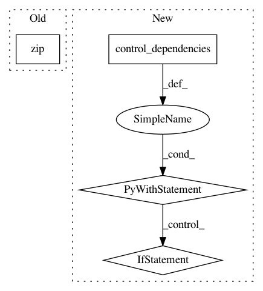

ee950b503eeed5aca3747a4bcf2a40f624b743a0,tensorforce/core/optimizers/multi_step.py,MultiStep,tf_step,#MultiStep#Any#Any#Any#Any#,49
Before Change
step_deltas = self.optimizer.step(
time=time, variables=variables, arguments=arguments, **kwargs
)
deltas = [delta1 + delta2 for delta1, delta2 in zip(deltas, step_deltas)]
return deltas
After Change
return deltas
else:
// TensorFlow while loop
def body(deltas):
with tf.control_dependencies(control_inputs=deltas):
step_deltas = self.optimizer.step(
variables=variables, arguments=arguments, **kwargs
)
deltas = [delta1 + delta2 for delta1, delta2 in zip(deltas, step_deltas)]
return deltas
num_steps = self.num_steps.value()
one = tf.constant(value=1, dtype=util.tf_dtype(dtype="int"))
deltas = self.while_loop(
cond=util.tf_always_true, body=body, loop_vars=(deltas,),
maximum_iterations=(num_steps - one)
)
return deltas
In pattern: SUPERPATTERN
Frequency: 3
Non-data size: 4
Instances
Project Name: reinforceio/tensorforce
Commit Name: ee950b503eeed5aca3747a4bcf2a40f624b743a0
Time: 2019-01-21
Author: alexkuhnle@t-online.de
File Name: tensorforce/core/optimizers/multi_step.py
Class Name: MultiStep
Method Name: tf_step
Project Name: reinforceio/tensorforce
Commit Name: 283d5e1f7fc211f03221b40976d41d437ed32aaf
Time: 2017-12-04
Author: aok25@cl.cam.ac.uk
File Name: tensorforce/core/optimizers/clipped_step.py
Class Name: ClippedStep
Method Name: tf_step
Project Name: HyperGAN/HyperGAN
Commit Name: 828381fe30ae454cda23b971991861346afd1b97
Time: 2018-11-02
Author: martyn@255bits.com
File Name: hypergan/optimizers/consensus_optimizer.py
Class Name: ConsensusOptimizer
Method Name: apply_gradients